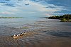

freshwater

Definition: Fresh water or freshwater is any naturally occurring liquid or frozen water containing low concentrations of dissolved salts and other total dissolved solids. Although the term specifically excludes seawater and brackish water, it does include non-salty mineral-rich waters such as chalybeate springs. Fresh water may encompass frozen and meltwater in ice sheets, ice caps, glaciers, snowfields and icebergs, natural precipitations such as rainfall, snowfall, hail/sleet and graupel, and surface runoffs that form inland bodies of water such as wetlands, ponds, lakes, rivers, streams, as well as groundwater contained in aquifers, subterranean rivers and lakes. Fresh water is the water resource that is of the most and immediate use to humans.
Source: Wikipedia
Wikipedia Page (Something wrong with this association? Let us know.)
Wikidata Page (Something wrong with this association? Let us know.)
Occurs in: